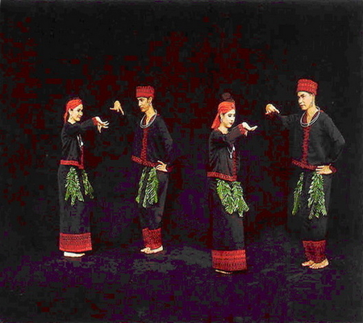

ฟ้อนเทียน
เป็นการฟ้อนที่มีลักษณะศิลปะที่อ่อนช้อยงดงาม ลักษณะการแสดงไม่ต่างจากการแสดงฟ้อนเล็บ ถ้าเป็นการแสดงฟ้อนเทียน นิยมแสดงในเวลากลางคืนเพื่อเน้นความสวยงามของแสงเทียนระยิบระยับสว่างไสว จุดเด่นของการแสดงชนิดนี้ จึงอยู่ที่แสงเทียนที่ผู้แสดงถือในมือข้างละ ๑ เล่ม เข้าใจว่าการฟ้อนเทียนนี้แต่เดิมคงจะใช้เป็นการแสดงบูชาสิ่งศักดิ์สิทธิ์ เพื่อเป็นการสักการะเทพเจ้าที่เคารพนับถือในงานพระราชพิธีหลวง ตามแบบฉบับล้านนาของทางภาคเหนือของไทย
ผู้ฟ้อนมักใช้เจ้านายเชื้อพระวงศ์ฝ่ายในทั้งสิ้น ในสมัยปัจจุบันการแสดงชุดนี้จึงไม่ค่อยได้เห็นบ่อยนักจะสังเกตเห็นว่าความสวยงามของการฟ้อนอยู่ที่การบิดข้อมือที่ถือเทียนอยู่ แสงวับๆ แวมๆ จากแสงเทียนจึงเคลื่อนไหวไปกับความอ่อนช้อยลีลา และลักษณะของเพลงที่ใช้บรรเลงประกอบนับเป็นศิลปะที่น่าดูอย่างยิ่งแบบหนึ่ง
การแต่งกาย
ผู้แสดงเป็นผู้หญิงล้วน นิยมแสดงหมู่คราวละหลายคน โดยจำนวนคนเป็นเลขคู่ เช่น ๘ หรือ ๑๐ คน แล้วแต่ความยิ่งใหญ่ของงานนั้น และความจำกัดของสถานที่ โดยผู้แสดงแต่งกายแบบฟ้อนเล็บ คือ การสวมเสื้อแขนกระบอก นุ่งซิ่นมีเชิงกรอมเท้า มุ่นผมมวย มีอุบะห้อยข้างศีรษะ ในมือเป็นสัญลักษณ์ คือ ถือเทียน ๑ เล่ม การแต่งกายของฟ้อนเทียนนี้ ปัจจุบันแต่งได้อีกหลายแบบ คืออาจสวมเสื้อในรัดอก ใส่เสื้อลูกไม้ทับแต่อย่างอื่นคงเดิม และอีกแบบคือสวมเสื้อรัดอก แต่มีผ้าสไบเป็นผ้าทอลายพาดไหล่อย่างสวยงาม แต่ยังคงนุ่งซิ่นกรอมเท้าและมุ่นผมมวย มีอุบะห้อยศีรษะ
โอกาสที่แสดง
ในงานพระราชพิธี หรือวันสำคัญทางศาสนา ต้อนรับแขกบ้านแขกเมืองชาวต่างชาติ และในงานประเพณีสำคัญตามแบบฉบับของชาวล้านนา
ฟ้อนเงี้ยว
เป็นการแสดงพื้นเมืองของชาวเขาเผ่าหนึ่งซึ่งเรียกว่า “เงี้ยว” มีภูมิลำเนาอยู่ทางภาคเหนือของประเทศไทยประกอบด้วย ช่างฟ้อนหญิงชายหลายคู่ แต่งกายด้วยชุดพื้นเมืองไทยใหญ่ การฟ้อนเงี้ยวเหมาะสำหรับผู้ชาย แต่ต่อมาเพื่อให้เกิดความสวยงาม จึงมีการใช้ผู้หญิงล้วน หรือใช้ทั้งชายและหญิงแสดงเป็นคู่ๆ มีลีลาการฟ้อนที่แปลกแตกต่างไปจากฟ้อนเล็บ และฟ้อนเทียน

การแต่งกาย
ผู้แสดงเป็นผู้หญิงล้วน นิยมแสดงหมู่คราวละหลายคน โดยจำนวนคนเป็นเลขคู่ เช่น ๘ หรือ ๑๐ คน แล้วแต่ความยิ่งใหญ่ของงานนั้น และความจำกัดของสถานที่ โดยผู้แสดงแต่งกายแบบฟ้อนเล็บ คือ การสวมเสื้อแขนกระบอก นุ่งซิ่นมีเชิงกรอมเท้า มุ่นผมมวย มีอุบะห้อยข้างศีรษะ ในมือเป็นสัญลักษณ์ คือ ถือเทียน ๑ เล่ม การแต่งกายของฟ้อนเทียนนี้ ปัจจุบันแต่งได้อีกหลายแบบ คืออาจสวมเสื้อในรัดอก ใส่เสื้อลูกไม้ทับแต่อย่างอื่นคงเดิม และอีกแบบคือสวมเสื้อรัดอก แต่มีผ้าสไบเป็นผ้าทอลายพาดไหล่อย่างสวยงาม แต่ยังคงนุ่งซิ่นกรอมเท้าและมุ่นผมมวย มีอุบะห้อยศีรษะ
โอกาสที่แสดง
ในงานพระราชพิธี หรือวันสำคัญทางศาสนา ต้อนรับแขกบ้านแขกเมืองชาวต่างชาติ และในงานประเพณีสำคัญตามแบบฉบับของชาวล้านนา
ฟ้อนเล็บ
ฟ้อนเล็บของกรมศิลปากร ได้รับรูปแบบการฟ้อนจากคุ้มเจ้าหลวงเจ้าผู้ครองนครเชียงใหม่ พระราชชายาเจ้าดารารัศมี เป็นผู้ปรับปรุง ซึ่งได้นำมาเผยแพร่ที่กรุงเทพมหานครในคราวสมโภชพระเศวตคชเดชน์ดิลก ช้างเผือกในรัชกาลที่ ๗ เมื่อ พ.ศ. ๒๔๗๐ แล้วนางลมุล ยมะคุปต์ ผู้เชี่ยวชาญการสอนนาฏศิลป์ไทย วิทยาลัยนาฏศิลป กรมศิลปากรได้นำมาฝึกให้ละครคณะหลวงในรัชกาลที่ ๗ และถ่ายทอดให้ เป็นชุดการแสดงของกรมศิลปากรโดยมีเนื้อร้องประกอบการแสดง เพื่อเป็นการบวงสรวงหรือฟ้อนต้อนรับตามประเพณีทางภาคเหนือ
การแต่งกาย
จะแต่งกายแบบไทยชาวภาคเหนือสมัยโบราณ คือ เกล้าผมทัดดอกไม้และอุบะ นุ่งผ้าตามแบบชาวเหนือ สวมเสื้อทรงกระบอกแขนยาว คอกลมห่มสไบเฉียง นุ่งผ้าซิ่นลายและ สวมเล็บมือยาว 8 นิ้ว เว้นแต่นิ้วโป้งหรือนิ้วหัวแม่มือ
โอกาสที่แสดง
ในงานเทศกาลหรืองานนักขัตฤกษ์ต่าง ๆ